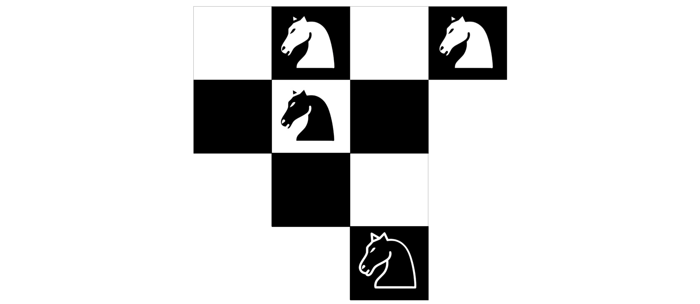
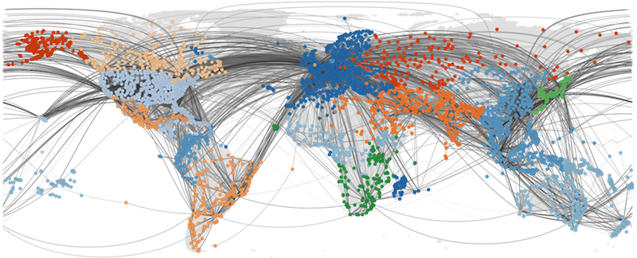
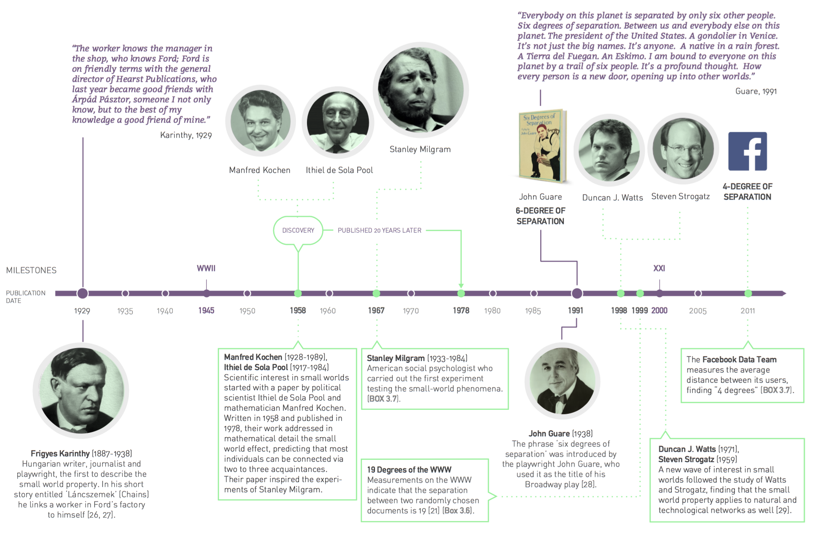
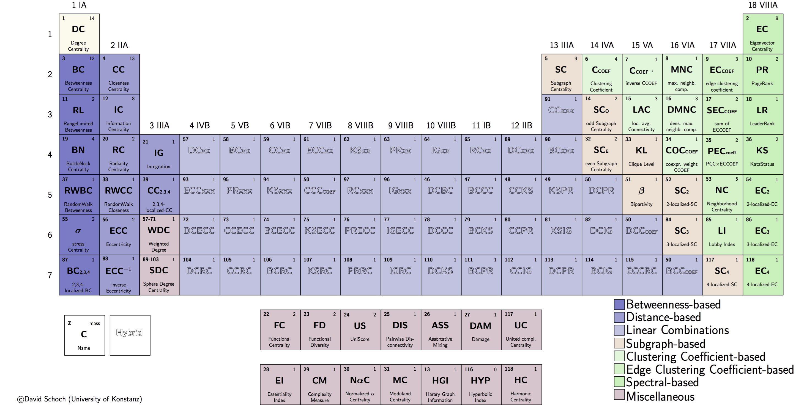
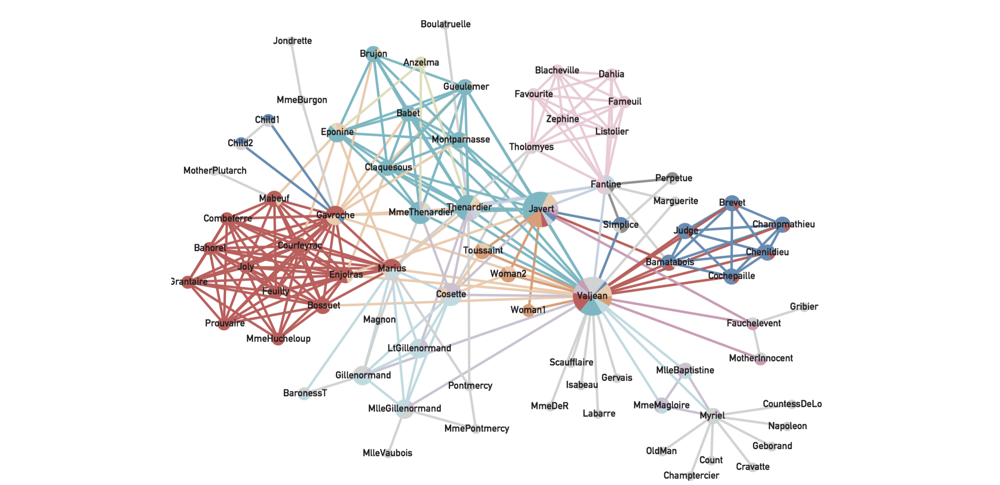
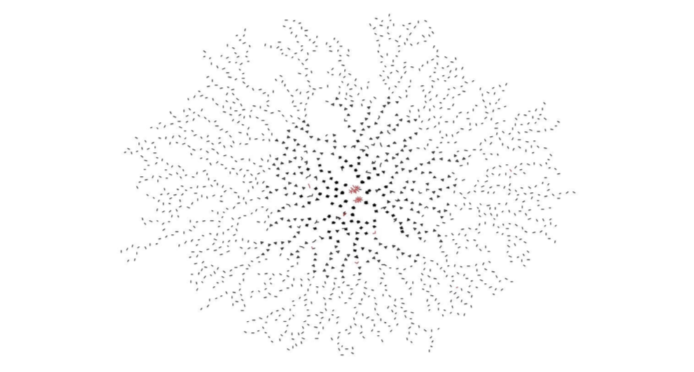

NetPy '19: Introduction to Network Analysis in Python
Workshop instructor
Asst. Prof. Lovro Šubelj, PhD, University of Ljubljana
Workshop schedule
Tuesday, 10th December 2019 at 3:30 PM (4 hours with breaks)
Workshop location
Lecture room 3 at UL FRI, Večna pot 113, Ljubljana, Slovenia
Materials and forum
High-level description
The workshop is primarily aimed at Python programmers, either academics, professionals or students, that wish to learn the basics of modern network science and practical analyses of complex real networks, such as social, information and biological networks. Familiarity with the basics of probability theory, statistics and linear algebra is strongly encouraged.
The workshop is based on masters level course Network Analysis offered at University of Ljubljana, Faculty of Computer and Information Science.
Recommended prerequisites
It is recommended that attendees bring a laptop with working installation of Python, NetworkX and CDlib packages, and necessary dependencies. Alternatively, you can work with any other network analysis package such as igraph, graph-tool or SNAP.py. Finally, for the purposes of visualization of smaller networks, it is recommended to have working installation of some network analysis software such as Gephi or visone.
Tentative syllabus
- From classical graph theory to modern network science (30 min)
- Large-scale structure of real networks and graph models (50 min)
- Measures of node importance and link analysis algorithms (50 min)
- Network community, core-periphery and other structures (50 min)
Network-based mining, visualization and some applications (50 min)
- Hands-on: Abstraction, centrality, communities, mining, visualization etc.
Networks data
All networks are available in Pajek, edge list in LNA formats.
- Simple toy example network (5 nodes)
- Zachary's karate club network (34 nodes)
- Davis's southern women network (32 nodes)
- Lusseau's bottlenose dolphins network (62 nodes)
- Game of Thrones character appearance network (107 nodes)
- Human diseasome network by common symptoms (117 nodes)
- Conflicts and alliances between world nations (180 nodes)
- Game of Thrones character kills network (284 nodes)
- Ljubljana public bus transport network (416 nodes)
- US airplane traffic transport network (1,323 nodes)
- Java software class dependency network (1,516 nodes)
- Ingredients network by common compounds (1,525 nodes)
- Map of Darknet from Tor network (7,178 nodes)
- IMDb actors collaboration network (17,577 nodes)
- Human protein-protein interaction network (19,634 nodes)
- WikiLeaks cable reference network (52,416 nodes)
- Internet map of autonomous systems (75,885 nodes)
- Amazon product copurchase network (262,111 nodes)
- Paper citation network of APS (438,943 nodes)
- Small part of Google web graph (875,713 nodes)
- Road/highway network of Texas (1,379,917 nodes)
Let's start with Guimera's four knights challenge
Tentative duration
5+5 min
Challenge description
To be revealed in class =)

1. Classical graph theory → modern network science
Tentative duration
20+10 min
Brief description
Introduction of networks and selected motivational examples. From classical graph theory to social network analysis and modern network science. Network perspectives in different fields of science.

Lecture slides
Book chapters
- Ch. 1: Introduction in Barabási, A.-L., Network Science (Cambridge University Press, 2016).
- Ch. 1-5: Introduction etc. in Newman, M.E.J., Networks: An Introduction (Oxford University Press, 2010).
- Ch. 1: Overview in Easley, D. & Kleinberg, J., Networks, Crowds, and Markets (Cambridge University Press, 2010).
Selected must-reads
- Barabási, A.-L., The network takeover, Nat. Phys. 8(1), 14-16 (2012).
- Motter, A.E. & Yang, Y., The unfolding and control of network cascades, Phys. Today 70(1), 33-39 (2017).
- Cramer, C., Porter, M.A. et al., Network Literacy: Essential Concepts and Core Ideas (Creative Commons Licence, 2015).
Selected papers
- Newman, M.E.J., The physics of networks, Phys. Today 61(11), 33-38 (2008).
- Cimini, G., Squartini, T. et al., The statistical physics of real-world networks, Nat. Rev. Phys. 1(1), 58-71 (2019).
- Newman, M.E.J., Communities, modules and large-scale structure in networks, Nat. Phys. 8(1), 25-31 (2012).
- Vespignani, A., Modelling dynamical processes in complex socio-technical systems, Nat. Phys. 8(1), 32-39 (2012).
- Hegeman, T. & Iosup, A., Survey of graph analysis applications, e-print arXiv:180700382v1, pp. 23 (2018).
- Hidalgo, C.A., Disconnected, fragmented, or united? A trans-disciplinary review of network science, Appl. Netw. Sci. 1, 6 (2016).
2. Large-scale network structure and graph models
Tentative duration
30+20 min
Brief description
Classical graph theory and modern network analysis. Random graphs, scale-free and small-world network models, and real network structure. Network representations, data formats and repositories.

Lecture slides
Hands-on analysis
Networks data
Book chapters
- Ch. 2: Graph theory, Ch. 3.8-3.9: Small worlds etc. & Ch. 4-5: Scale-free property etc. in Barabási, A.-L., Network Science (Cambridge University Press, 2016).
- Ch. 6: Mathematics of networks & Ch. 12-15: Random graphs etc. in Newman, M.E.J., Networks: An Introduction (Oxford University Press, 2010).
- Ch. 2: Graphs, Ch. 18: Power laws etc. & Ch. 20: Small-world phenomenon in Easley, D. & Kleinberg, J., Networks, Crowds, and Markets (Cambridge University Press, 2010).
Selected must-reads
- Newman, M.E.J., Watts, D.J. & Strogatz, S.H., Random graph models of social networks, P. Natl. Acad. Sci. USA 99, 2566-2572 (2002).
- Ugander, J., Karrer, B. et al., The anatomy of the Facebook social graph, e-print arXiv:1111.4503v1, pp. 17 (2011).
- Backstrom, L., Boldi, P. et al., Four degrees of separation, In: Proceedings of WebSci '12 (Evanston, IL, USA, 2012), pp. 45-54.
Selected papers
- Erdős, P. & Rényi, A., On random graphs I, Publ. Math. Debrecen 6, 290-297 (1959).
- Milgram, S., The small world problem, Psychol. Today 1(1), 60-67 (1967).
Granovetter, M.S., The strength of weak ties, Am. J. Sociol. 78(6), 1360-1380 (1973).
- Watts, D.J. & Strogatz, S.H., Collective dynamics of 'small-world' networks, Nature 393(6684), 440-442 (1998).
- Barabási, A.-L. & Albert, R., Emergence of scaling in random networks, Science 286(5439), 509-512 (1999).
- Faloutsos, M., Faloutsos, P. & Faloutsos, C., On power-law relationships of the Internet topology, Comput. Commun. Rev. 29(4), 251-262 (1999).
- Albert, R., Jeong, H. & Barabási, A.-L., Error and attack tolerance of complex networks, Nature 406(6794), 378-382 (2000).
- Dorogovtsev, S.N. & Mendes, J.F.F., Evolution of networks, Adv. Phys. 51(4), 1079-1187 (2002).
- Clauset, A., Shalizi, C.R. & Newman, M.E.J., Power-law distributions in empirical data, SIAM Rev. 51, 661-703 (2009).
- De Domenico, M. & Arenas, A., Modeling structure and resilience of the dark network, Phys. Rev. E 95(2), 022313 (2017).
- Broido, A.D. & Clauset, A., Scale-free networks are rare, Nat. Commun. 10(1), 1017 (2019).
- Barabási, A.-L., Love is all you need, reply to e-print arXiv:1801.03400v1, pp. 6 (2018).
- Holme, P., Rare and everywhere, Nat. Commun. 10(1), 1016 (2019).
3. Measures of node importance and link analysis
Tentative duration
30+20 min
Brief description
Node importance and measures of centrality, i.e. clustering coefficients, spectral, closeness and betweenness centrality, and link analysis algorithms. Link importance and measures of bridging, i.e. betweenness centrality, embeddedness and topological overlap.

Lecture slides
Hands-on analysis
Networks data
Book chapters
- Ch. 7: Measures and metrics in Newman, M.E.J., Networks: An Introduction (Oxford University Press, 2010).
- Ch. 14: Link analysis and Web search in Easley, D. & Kleinberg, J., Networks, Crowds, and Markets (Cambridge University Press, 2010).
- Ch. 14-15: Classical node centrality etc. in Estrada, E. & Knight, P.A., A First Course in Network Theory (Oxford University Press, 2015).
Selected must-reads
- Jeong, H., Mason, S.P. et al., Lethality and centrality in protein networks, Nature 411, 41-42 (2001).
- Jensen, P., Morini, M. et al., Detecting global bridges in networks, J. Complex Netw. 4(3), 319-329 (2015).
- Tong, H., Faloutsos, C. & Pan, J.-Y., Fast random walk with restart and its applications, In: Proceedings of ICDM ’06 (Washington, DC, USA, 2006), pp. 613-622.
Selected papers
- Freeman, L., A set of measures of centrality based on betweenness, Sociometry 40(1), 35-41 (1977).
- Bonacich, P., Power and centrality: A family of measures, Am. J. Sociology 92(5), 1170-1182 (1987).
- Kleinberg, J., Authoritative sources in a hyperlinked environment, J. ACM 46(5), 604-632 (1999).
- Franceschet, M. & Bozzo, E., A theory on power in networks, e-print arXiv:1510.08332v2, pp. 19 (2016).
- Everett, M.G. & Valente, T.W., Bridging, brokerage and betweenness, Soc. Networks 44, 202-208 (2016).
- Berkhin, P., A survey on PageRank computing, Internet Math. 2(1), 73-120 (2005).
4. Clusters of nodes and network mesoscopic structure
Tentative duration
30+20 min
Brief description
Network community, core-periphery and other mesoscopic structures. Graph partitioning, community detection, blockmodeling, stochastic block models and core-periphery detection.

Lecture slides
Hands-on analysis
Networks data
Book chapters
- Ch. 9: Communities in Barabási, A.-L., Network Science (Cambridge University Press, 2016).
- Ch. 7.12-7.13: Homophily etc. & Ch. 11: Graph partitioning in Newman, M.E.J., Networks: An Introduction (Oxford University Press, 2010).
- Ch. 21: Communities in networks in Estrada, E. & Knight, P.A., A First Course in Network Theory (Oxford University Press, 2015).
- Ch. 3: Strong and weak ties in Easley, D. & Kleinberg, J., Networks, Crowds, and Markets (Cambridge University Press, 2010).
Selected must-reads
- Hric, D., Darst, R.K. & Fortunato, S., Community detection in networks: Structural communities versus ground truth, Phys. Rev. E 90(6), 062805 (2014).
- Fortunato, S. & Hric, D., Community detection in networks: A user guide, Phys. Rep. 659, 1-44 (2016).
- Schaub, M.T., Delvenne, J.-C. et al., The many facets of community detection in complex networks, Appl. Netw. Sci. 2, 4 (2017).
- Rossetti, G., Milli, L., & Cazabet, R., CDlib: A python library to extract, compare and evaluate communities from complex networks, Appl. Netw. Sci. 4(1), 1–26 (2019).
Selected papers
- Granovetter, M.S., The strength of weak ties, Am. J. Sociol. 78(6), 1360-1380 (1973).
- Girvan, M. & Newman, M.E.J., Community structure in social and biological networks, P. Natl. Acad. Sci. USA 99(12), 7821-7826 (2002).
- Fortunato, S., Community detection in graphs, Phys. Rep. 486(3-5), 75-174 (2010).
- Leskovec, J., Lang, K.J. et al., Community structure in large networks, Internet Math. 6(1), 29–123 (2009).
- Borgatti, S.P. & Everett, M.G., Models of core/periphery structures, Soc. Networks 21(4), 375–395 (2000).
- Holme, P., Core-periphery organization of complex networks, Phys. Rev. E 72(4), 46111 (2005).
- Newman, M.E.J. & Leicht, E.A., Mixture models and exploratory analysis in networks, P. Natl. Acad. Sci. USA 104(23), 9564 (2007).
- Raghavan, U.N., Albert, R. & Kumara, S., Near linear time algorithm to detect community structures in large-scale networks, Phys. Rev. E 76(3), 036106 (2007).
- Rosvall, M. & Bergstrom, C.T., Maps of random walks on complex networks reveal community structure, P. Natl. Acad. Sci. USA 105(4), 1118-1123 (2008).
- Blondel, V.D., Guillaume, J.-L. et al., Fast unfolding of communities in large networks, J. Stat. Mech., P10008 (2008).
- Traag, V.A., Waltman, L. & Van Eck, N.J., From Louvain to Leiden: Guaranteeing well-connected communities, Sci. Rep. 9, 5233 (2019).
- Peixoto, T.P., Bayesian stochastic blockmodeling, e-print arXiv:170510225v7, pp. 44 (2018).
5. Network-based mining, visualization and applications
Tentative duration
30+20 min
Brief description
Network-based node clustering, classification and regression. Force-directed node layout and network visualization. Selected applications of network analysis (i.e. automobile insurance fraud and historical development of science).

Lecture slides
Hands-on analysis
Networks data
Selected must-reads
- Grover, A. & Leskovec, J., node2vec, In: Proceedings of KDD ’16 (San Francisco, CA, USA, 2016), pp. 855-864.
- Zanin, M., Papo, D. et al., Combining complex networks and data mining: Why and how, Phys. Rep. 635, 1-44 (2016).
- Ma, K.-L. & Muelder, C.W., Large-scale graph visualization and analytics, Computer 46(7), 39-46 (2013).
Selected papers
- Getoor, L. & Diehl, C.P., Link mining: A survey, SIGKDD Explor. 7(2), 3–12 (2005).
- Getoor, L., Friedman, N. et al., Learning probabilistic models of link structure, J. Mach. Learn. Res. 3, 679–707 (2002).
- Neville, J. & Jensen, D., Iterative classification in relational data, In: Proceedings of SRL ’00 (Austin, TX, USA, 2000), pp. 13–20.
- Macskassy, S.A. & Provost, F., Classification in networked data: A toolkit and a univariate case study, J. Mach. Learn. Res. 8, 935-983 (2007).
- Bhagat, S., Cormode, G. & Muthukrishnan, S., Node classification in social networks, e-print arXiv:1101.3291v1, pp. 37 (2011).
- Šubelj, L., Exploratory and predictive tasks of network community detection, In: Proceedings of NetSci '15 (Zaragoza, Spain, 2015), p. 1.
- Hric, D., Peixoto, T.P. & Fortunato, S., Network structure, metadata and the prediction of missing nodes, Phys. Rev. X 6(3), 031038 (2016).
- Perozzi, B., Al-Rfou, R. & Skiena, S., DeepWalk, In: Proceedings of KDD ’14 (New York, NY, USA, 2014), pp. 701-710.
- Figueiredo, D.R., Ribeiro, L.F.R. & Saverese, P.H.P., struc2vec, In: Proceedings of KDD ’17 (Halifax, Canada, 2017), pp. 1–9.
- Peel, L., Graph-based semi-supervised learning for relational networks, In: Proceedings of SDM ’17 (Houston, TX, USA, 2017), pp. 1-11.
- Eades, P., A heuristic for graph drawing, Congressus Numerantium 42, 146-160 (1984).
- Kamada, T. & Kawai, S., An algorithm for drawing general undirected graphs, Inform. Process. Lett. 31(1), 7-15 (1989).
- Fruchterman, T.M.J. & Reingold, E.M., Graph drawing by force-directed placement, Softw: Pract. Exper. 21(11), 1129-1164 (1991).
- Kobourov, S.G., Spring embedders and force directed graph drawing algorithms, e-print arXiv:1201.3011v1, pp. 23 (2012).
- Gibson, H., Faith, J. & Vickers, P., A survey of two-dimensional graph layout techniques for information visualisation, Infor. Visual. 12(3-4), 324-357 (2013).
- Šubelj, L., Furlan, Š. & Bajec, M., An expert system for detecting automobile insurance fraud using social network analysis, Expert Syst. Appl. 38(1), 1039-1052 (2011).
- Šubelj, L., Waltman, L. et al., Intermediacy of publications, R. Soc. Open Sci., pp. 19 (2019).